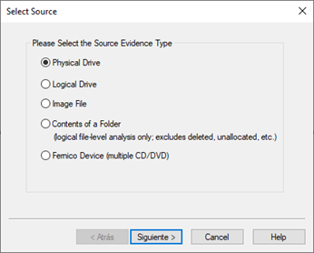
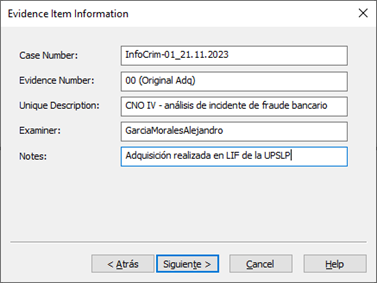
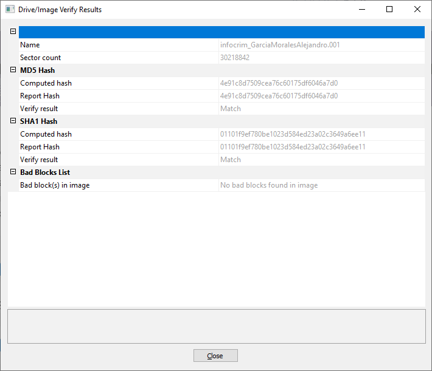

Ficha Técnica
Actividad 16: La verdad en los bits
Adquisición forense con FTK Imager. Laboratorio centrado en la creación de copias exactas (bit a bit) de dispositivos físicos, garantizando la inalterabilidad de la evidencia para su uso en respuestas a incidentes y marcos legales.
Software: AccessData FTK Imager 4.3.1.1
Evidencia: Kingston DataTraveler 3.0 USB Device (14.7 GB)
Expediente: InfoCrim-01_21.11.2023
Descripción: CNO IV - análisis de incidente de fraude bancario
Metodología
Fases del Análisis Forense Digital
Para asegurar que la muestra preserva su estado original y alinear los procedimientos con estándares internacionales, el análisis forense se estructura en cinco fases principales que facilitan la verificabilidad y reproducibilidad.
Raw (dd): Formato de imagen cruda bit a bit. Consiste en una copia exacta y directa sin compresión ni metadatos internos, requiriendo que los hashes se almacenen en un archivo de texto separado.
E01 (Encase Image Format): A diferencia de Raw, E01 encapsula la copia junto con los metadatos del caso (investigador, fecha, notas) y los valores hash (MD5/SHA-1) dentro del mismo archivo, soportando además compresión sin pérdida.
Procedimiento
Configuración y Creación de Imagen
Se conectó el dispositivo USB a la estación de trabajo forense y se utilizó la función "Create Disk Image" en FTK Imager. Se seleccionó "Physical Drive" para garantizar la copia completa de la memoria Kingston.

>_ Evidencia: Selección de la unidad física (PHYSICALDRIVE1) para la adquisición.
Se configuró el formato de salida como Raw (dd) y se ingresaron los metadatos del caso (InfoCrim-01_21.11.2023). Debido al límite de fragmentación establecido en 1500 MB, la herramienta generó múltiples archivos segmentados.

>_ Evidencia: Registro de metadatos del caso y configuración de la fragmentación de la imagen.
Proceso y Validación
La adquisición inició a las 20:07 y finalizó a las 20:11, con un tiempo total de 4 minutos y 10 segundos. Al finalizar, FTK Imager calculó los hashes MD5 y SHA-1 de la imagen generada.

>_ Evidencia: Reporte de verificación de imagen indicando coincidencia exacta (Match) en los hashes MD5 y SHA1.
Resultados
El proceso de adquisición fue validado matemáticamente. Los hashes calculados originalmente para la memoria (Computed hashes) coinciden exactamente con los hashes de la imagen resultante (Report hashes). Esta coincidencia bidireccional garantiza el principio de inalterabilidad, afirmando que la copia es idéntica bit a bit y no sufrió manipulaciones.
El dispositivo de ~14.7 GB posee capacidad suficiente para haber transportado bases de datos bancarias completas o herramientas de ataque ejecutadas en los sistemas de la víctima, alineándose con el escenario de fraude bancario investigado.